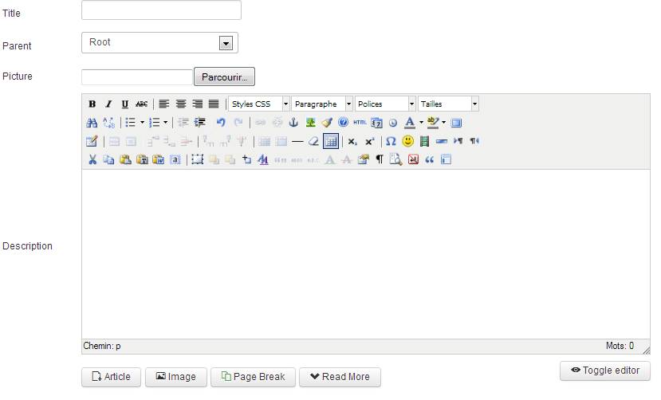
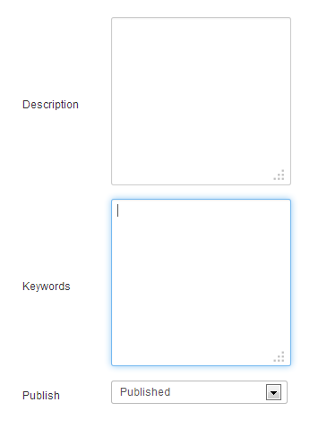

This view is pretty simple to understand and very similar to create a category in Joomla!
Give the category a title, location, picture (check out limitations here) and a description.
You can see pictures assigned to each category and a button ads.
You can assign keywords here whether they are published.
You can set a limit of ads per user for your category, you just have to fill the field with the limited number that you want.
The -1 value is a unlimited number of ads.
You can also limit the access of your categories to a chosen user groups.
Two options are available, 'Read' will limit the read access of the category to the users in the authorized groups, 'Write' will limit the write access of the category to the users in the authorized groups.